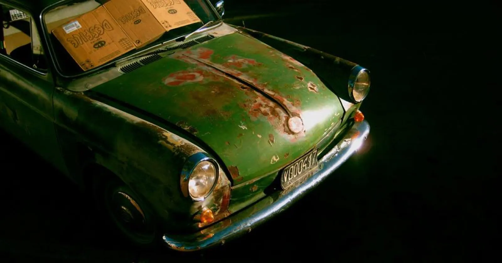
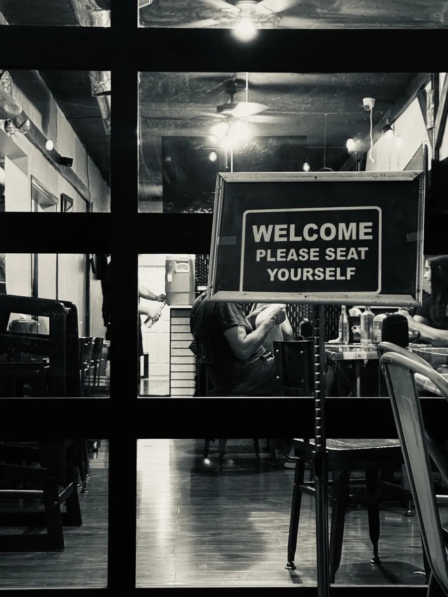
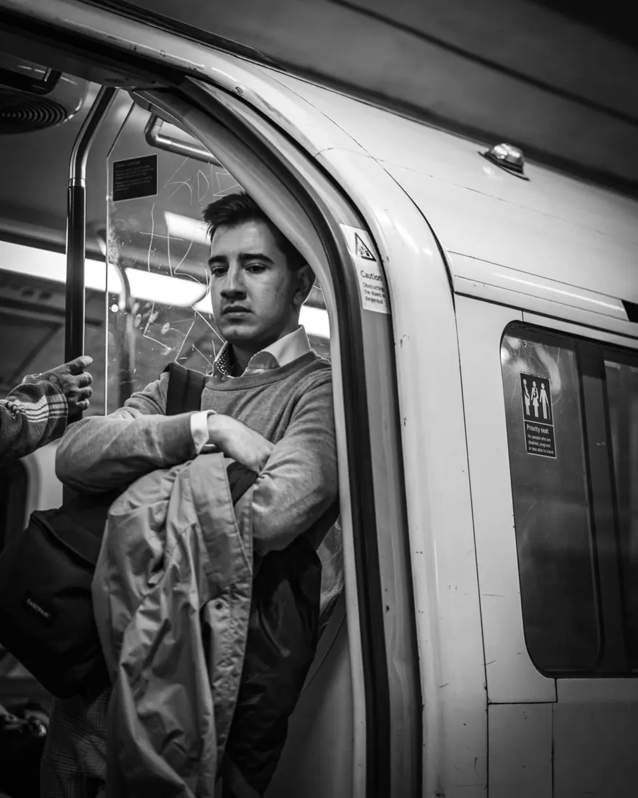
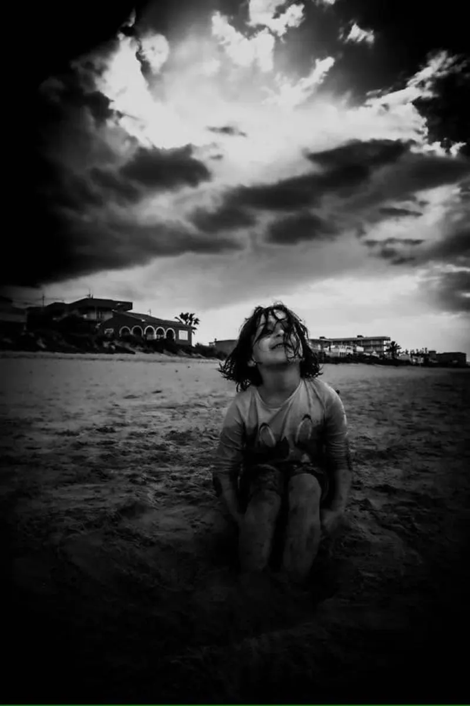
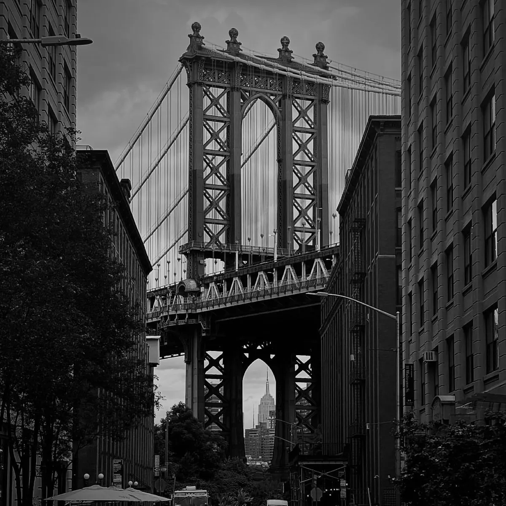
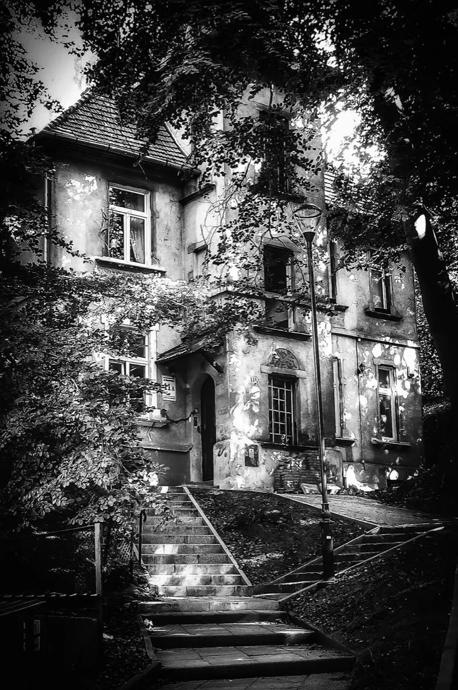
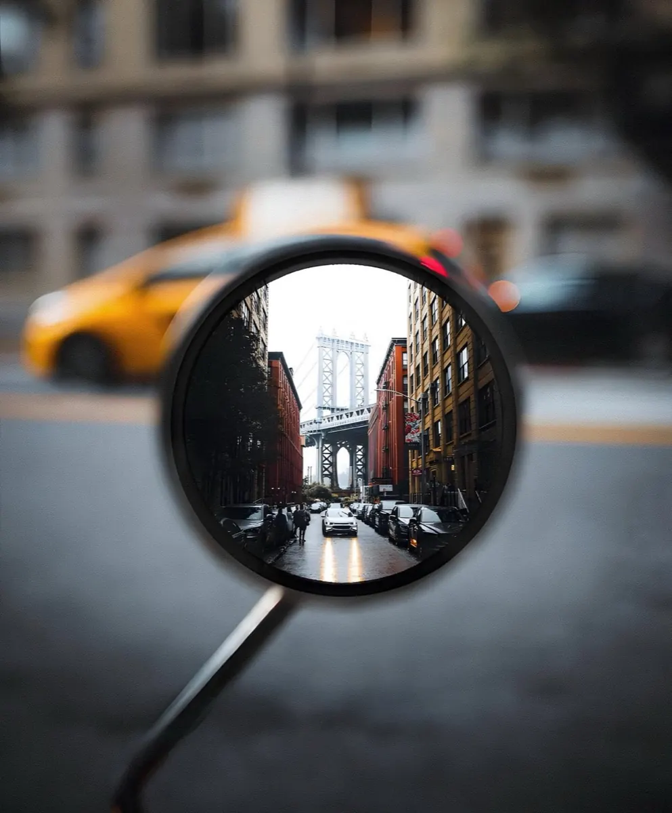
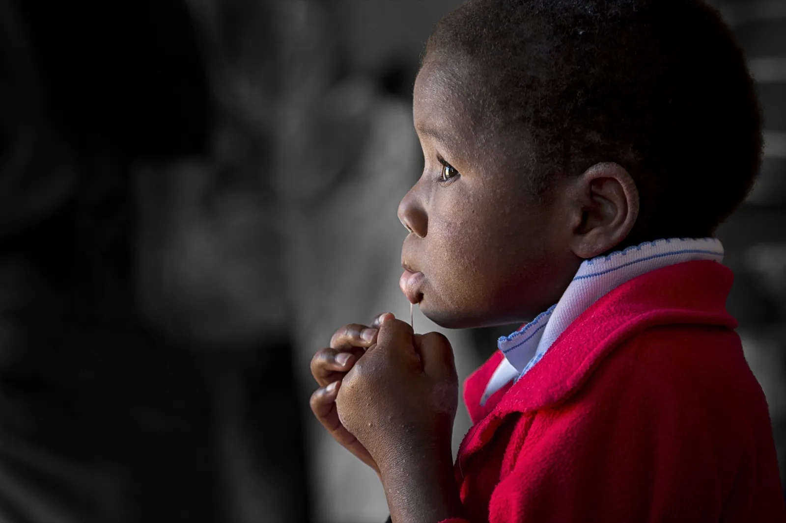
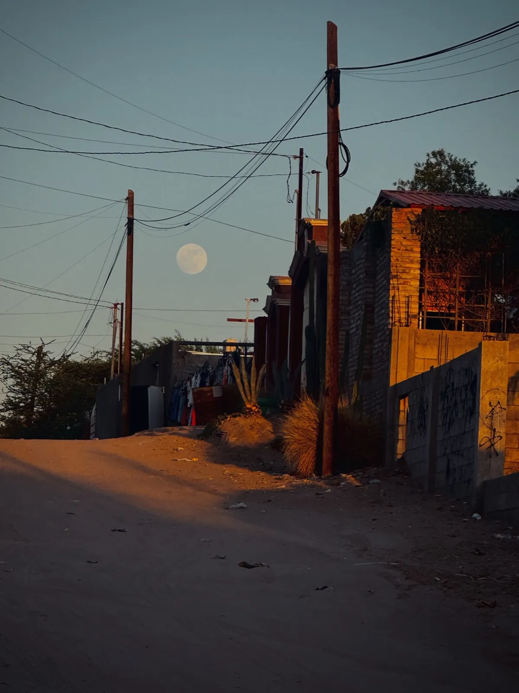
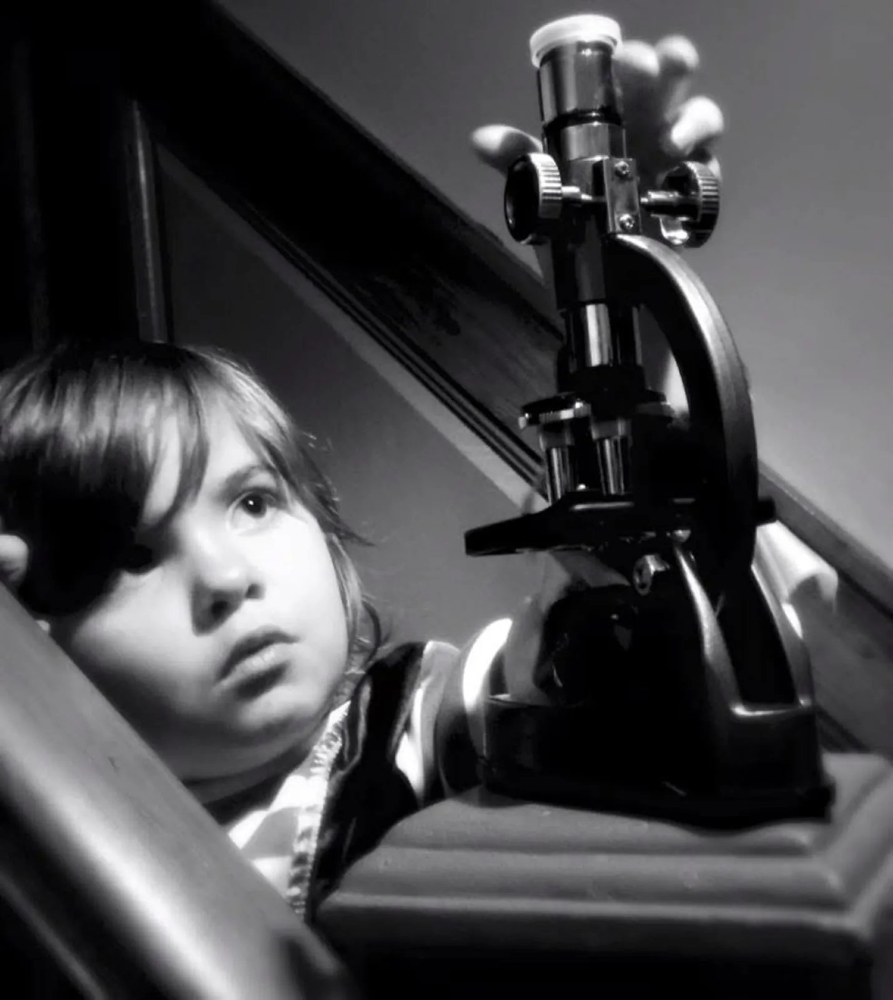

A Small Stone
Documentary
An intimate documentary built on patience and proximity — the small thing that turns out to hold everything.

Trans-media producer & filmmaker. A one-person production ecosystem telling true stories through documentary, drama, sound and the still frame.
“Proof that untreated curiosity
can become a career.”
Selected Frames






Stills from two decades of documentary & street work — London, New York, Manila, the American desert.

Feature · Director / Producer
A feature drama that premiered at the Cannes Film Festival (2004) and opened the Taormina Film Festival — the through-line of a career built on telling difficult stories plainly. Twenty years on, the same instinct drives the documentary slate: people first, spectacle never.
The Slate · 2025—26
Documentary
An intimate documentary built on patience and proximity — the small thing that turns out to hold everything.
Documentary · A Survivor's Story
Survivorship, community and resilience after tragedy — told with the consent and the cadence of the people who lived it.
Documentary · Artists of the Desert
The makers of the Coachella Valley — a portrait of art, heat and reinvention shot across the desert he now calls home.
Ethnographic Documentary
An ethnographic study of ritual, perception and the boundary between belief and evidence.
Documentary · The Ted Hayes Story
A life spent on America's pavements — homelessness, activism and one man's refusal to be invisible.
Documentary · In Development
Identity beyond the headline — a film that lets its subjects define their own terms.

The Book · Forthcoming
Five months. One road trip across the United States. A 600-page travelogue of essays, photographs and cartoons — the country seen plainly, from the passenger window of an untreated curiosity.
Manuscript in progress · 2025—26
Multidisciplinary Practice
Field to final cut
FAA Part 107 certified
Documentary · street · portrait
Edit · sound · colour
Feature & consultancy
Narration · live events
Cartoons · digital art
University & online

Curiosity, in its natural habitat.
Director's Statement
“A raw and honest approach that stands out — emphasising truth over artifice.” — James Christopher, The Guardian
For thirty years Andi Reiss has moved between continents and crafts — London, Hong Kong, Doha, Cebu, and now the California desert — building films, books, photographs and curricula from a single conviction: that the most interesting thing you can do with a camera is point it at what's actually there.
He calls himself the manager of the quiet tension between art and commerce — a one-person production ecosystem who writes, shoots, flies, edits, scores, illustrates and teaches, then does it again.